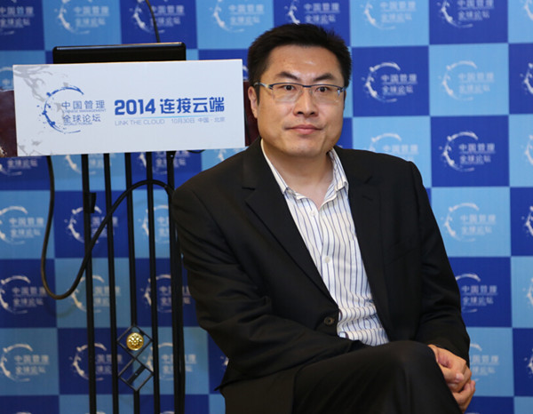
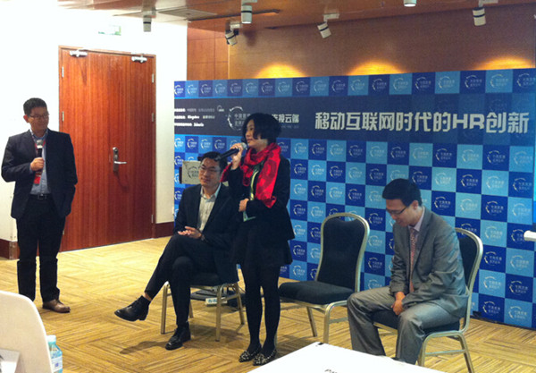

| 金蝶新闻 | |
|
|


2104年10月30日，金蝶以“移动互联网时代的HR创新”为主题，携手众多人力资源管理精英一起相聚北京国家会议中心，参加第四届中国管理全球论坛HR平行分论坛，共同探寻人力资源管理领域在移动互联时代下的变革与突破。
格林企业管理咨询有限公司总经理刘家雍先生从移动互联时代的管理特色角度深入分析HR应如何迎接自组织、自管理的新时代，提出了建设“共创众参”的人力资源管理模式以及具体的行动方法。
 格林企业管理咨询有限公司总经理 刘家雍 激情演讲
格林企业管理咨询有限公司总经理 刘家雍 激情演讲
腾讯公司人力资源平台部总经理马海刚先生以“I时代的HR理念升级与腾讯实践”为题，提出了I时代（internet互联网、individualism个体主义、innovation颠覆式创新）背景下人力资源管理转型升级需要做到的三点：一是HR组织模式升级，二是HR信息化升级，三是HR数据处理能力升级。同时他还介绍了互联网行业的翘楚腾讯公司HR管理的变革与实践过程，并详细展示了腾讯“HR管理助手”这一移动端的管理工具给腾讯的各级管理人员和员工带来的便利和价值。
腾讯公司人力资源平台部总经理 马海刚 聆听观众提问
东方丝绸市场股份有限公司人力资源总监孙薇女士则在对话环节，精彩分享了东方丝绸社交化人力资源管理体系建设过程中的点滴故事和信息化心得。她特别提到了金蝶s-HR 缓解集团员工停车位紧张的小插曲。原来因为金蝶s-HR的移动应用功能可以随时随地查看员工档案，而金蝶又特别为其进行了个性化开发，在员工档案中增设了“车牌号码”这一信息字段。在停车位日趋紧张，常有员工不得已占用车库通道或影响他人车辆进出时，相关人员可以及时通过手机查询车主信息，联系当事人尽快移动车辆。类似这样的人性化便捷管理，极大提升了东方丝绸的员工对集团人力资源管理工作的满意度。
东方丝绸市场股份有限公司人力资源总监 孙薇 对话分享
本次平行论坛着重思考重新构建基于移动互联网的人力资源业务管理模式以及未来人力资源管理需要思考的全新方向。金蝶助理总裁、HR产品部总经理柴晓波最后阐述了金蝶s-HR这一款社交化人力资源管理软件的6S设计理念：社交协作(Social)、战略决策(Strategic)、业务支持(Support)、贴心服务、(Service)、专业应用(Specialist)和及时供应(Supply)。
移动互联时代，企业人力资源管理需要社交化的移动管理平台协助开展。金蝶s-HR，连接人与HR服务，是战略落地的高管决策军师，是经理人团队管理的得力助手，是基层员工身边的良师益友，是HR人士的专业伙伴，是外部人才及时供应的最佳通道。